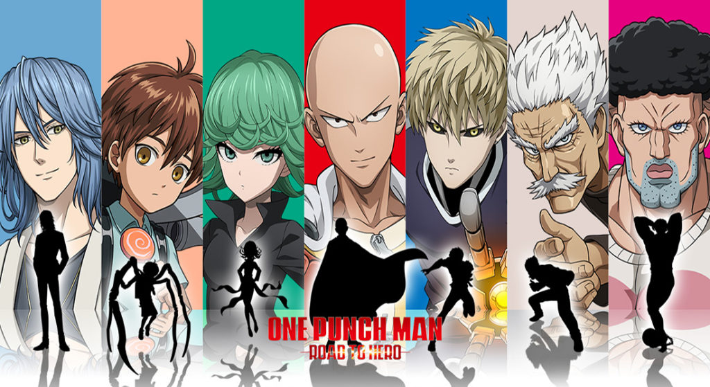
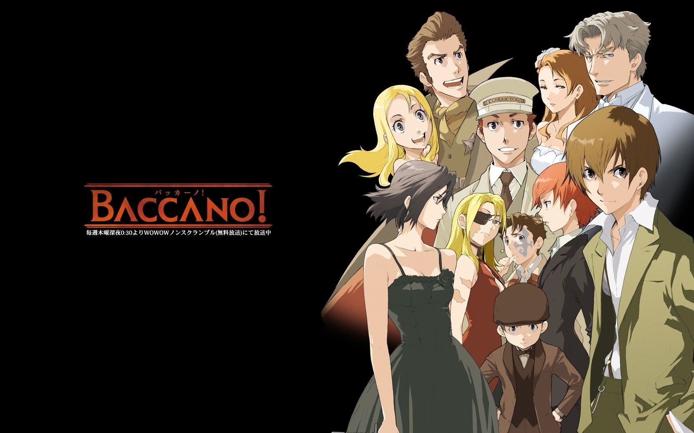
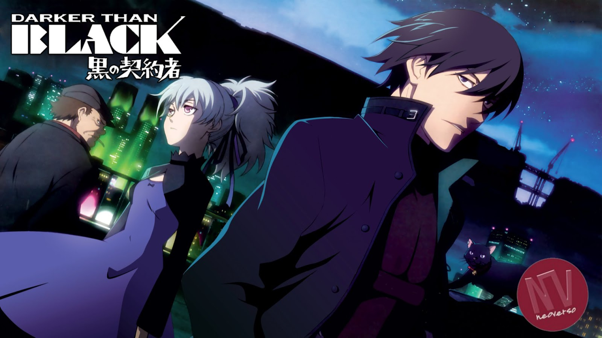

One Punch-Man

La historia gira alrededor de un héroe llamado Saitama, el cual vive en la Ciudad Z de Japón. Todas las ciudades son atacadas por monstruos constantemente, y los héroes deben encargarse de proteger a los habitantes con sus habilidades eliminando a cada uno de los enemigos. Saitama es alguien muy poco conocido en Japón, pero debido a su poder ha vencido a incontables villanos de una manera muy fácil, ya que este tiene tanta fuerza física que puede derrotar prácticamente a cualquier enemigo con tan solo un golpe, incluso podría ser el mejor de todos si lo quisiera.
Estos acontecimientos de eliminar a sus oponentes con un golpe han hecho que Saitama se sienta cada vez más aburrido porque nunca hay un reto verdadero para él, por lo que siempre intenta buscar rivales poderosos que demuestren su fuerza. Durante la historia, Saitama logra hacer a varios amigos y enemigos, además, se cuenta la historia de su origen y cómo forma parte de la Asociación de Héroes.
Ver anime
Baccano!

Ambientada en los años treinta, la serie sigue a varios personajes, mientras se van reuniendo en Nueva York, en medio de una guerra entre familias de la Mafia. Baccano! está basado en una serie de novelas de Ryohgo Narita, con ilustraciones de Katsumi Enami. La historia de estas novelas comienza en el siglo XVIII. Un grupo de alquimistas logra conjurar a un demonio, el que les da el "licor de la inmortalidad". Sin embargo, existe una forma de morir: Cuando uno de los alquimistas está listo para morir, otro puede "consumirlo", colocando su mano derecha sobre la cabeza del otro, absorbiendo en el proceso, todos sus conocimientos. Eventualmente, el último que quede con vida, será devorado por el demonio. La noche siguiente, uno de ellos comienza a "consumir" a sus compañeros y para escapar de él, se dispersan por el mundo.
Ver anime
Darker Than Black

Un territorio inescrutable e inexplorado conocido como La Puerta del Infierno, hizo aparición de pronto en el pasado, privando a Tokyo de su cielo original. Como consecuencia, aparecieron también personas con habilidades especiales, las Marionetas y los Contratistas. Las Marionetas son mediums carentes de emociones, mientras que los Contratistas poseen poderes especiales.
Las agencias de inteligencia de todo el mundo utilizan Contratistas para encubrir secretos relacionados con la Puerta del Infierno, y llevan a cabo violentas batallas por la posesión de información al respecto.
Ver anime
Jojo's Bizarre Adventure

Basada en el manga homónimo, Jojo's Bizarre Adventure sigue las aventuras de todas las generaciones de la familia Joestar, desde finales del siglo XIX hasta la actualidad. Todos los miembros de la familia tienen poderes, que son una fuerza psíquica intensa. Esta familia son los encargados de terminar con los enemigos sobrenaturales que amenazan el mundo. Además, la ficción narra todas las historias que se encuentra la familia a lo largo de sus aventuras.
Cada temporada sigue la historia de un miembro de la familia Joestar: Jonathan Joestar, Joseph Joestar, Jotaro Kujo y Josuke Higashikata. La mayoría tiene una marca de nacimiento con forma de estrella encima del omóplato izquierdo.
Ver anime